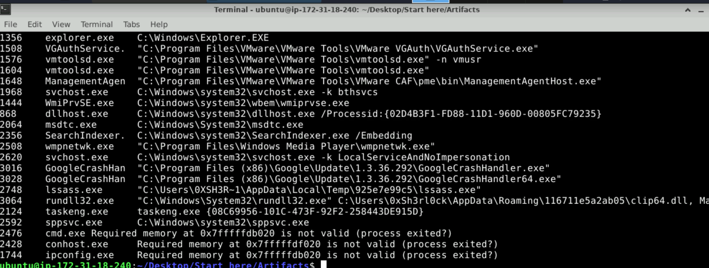
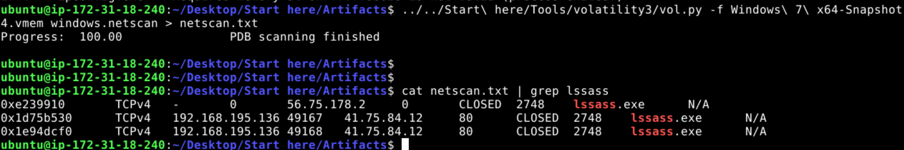
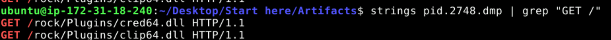
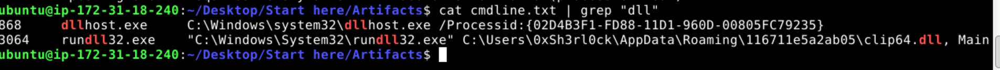
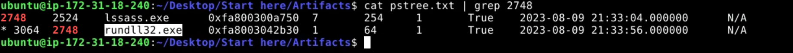
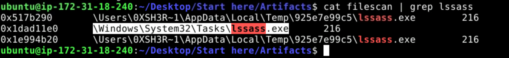

A memory forensics investigation of a Windows host infected with Amadey, a modular loader/botnet malware. Analysis was done with Volatility 3 against a .vmem snapshot, plus strings and grep for HTTP artifacts.
- Sample:
Windows 7 x64-Snapshot4.vmem - Tooling: Volatility 3, strings, grep
Q1 - Parent process behind the malicious activity
Running windows.cmdline shows a process named lssass.exe (note the double s, masquerading as the legitimate lsass.exe) executing from a user's Temp directory instead of C:\Windows or C:\Program Files. Legitimate lsass.exe only ever runs from System32, so this is the rogue parent.
Answer: lssass.exe (PID 2748)

Q2 - Location of the rogue process
The path visible in the same windows.cmdline output confirms where the binary lives on disk.
Answer: C:\Users\0XSH3R~1\AppData\Local\Temp\925e7e99c5\lssass.exe
Q3 - Command and Control (C2) server IP
Ran windows.netscan and grepped for the process name:
vol.py -f "Windows 7 x64-Snapshot4.vmem" windows.netscan > netscan.txt
cat netscan.txt | grep lssass
lssass.exe (PID 2748) has two connections to the same external IP on port 80.
Answer: 41.75.84.12

Q4 - Number of additional files being fetched
Dumped the process memory, then pulled HTTP GET requests out of it with strings:
vol.py -f "Windows 7 x64-Snapshot4.vmem" windows.memmap --pid 2748 --dump
strings pid.2748.dmp | grep "GET /"
Two distinct plugin DLLs are being downloaded from the C2:
/rock/Plugins/cred64.dll/rock/Plugins/clip64.dll
Answer: 2

Q5 - Full path of the downloaded file used in the attack
Checked windows.cmdline for what actually got executed. rundll32.exe (PID 3064) is launched pointing at the dropped plugin.
Answer: C:\Users\0xSh3rl0ck\AppData\Roaming\116711e5a2ab05\clip64.dll

Q6 - Child process spawned to execute the plugins
Used windows.pstree and grepped for the malware's PID (2748) to find its children.
cat pstree.txt | grep 2748
rundll32.exe (PID 3064) has parent PID 2748 (lssass.exe), confirming it was spawned by the malware to load the downloaded DLL.
Answer: rundll32.exe

Q7 - Additional persistence mechanism
Ran windows.filescan and grepped for the malware name:
cat filescan | grep lssass
Besides the Temp directory copies, there is a reference under \Windows\System32\Tasks\lssass.exe - a scheduled task, a well-known Amadey persistence technique.
Answer: C:\Windows\System32\Tasks (scheduled task)

Summary
| Item | Value | MITRE ATT&CK |
|---|---|---|
| Malicious process | lssass.exe (PID 2748) |
T1036 Masquerading |
| On-disk path | C:\Users\0XSH3R~1\AppData\Local\Temp\925e7e99c5\lssass.exe |
T1036 Masquerading |
| C2 server | 41.75.84.12:80 |
T1071.001 Web Protocols |
| Plugins downloaded | cred64.dll, clip64.dll |
T1105 Ingress Tool Transfer |
| Loaded plugin path | C:\Users\0xSh3rl0ck\AppData\Roaming\116711e5a2ab05\clip64.dll |
T1105 Ingress Tool Transfer |
| Child process | rundll32.exe (PID 3064) |
T1218.011 Rundll32 |
| Persistence | Scheduled task in \Windows\System32\Tasks |
T1053.005 Scheduled Task |